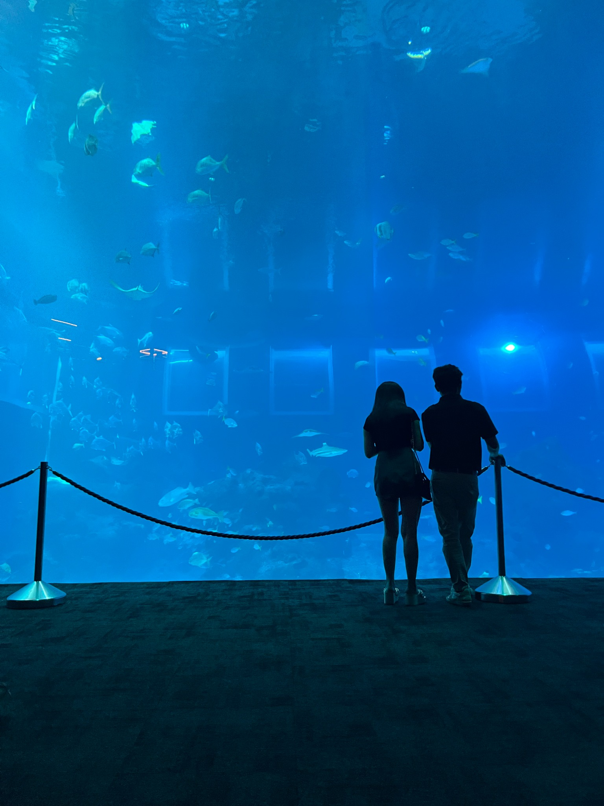
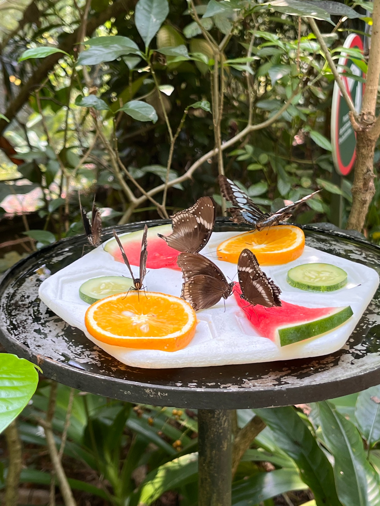
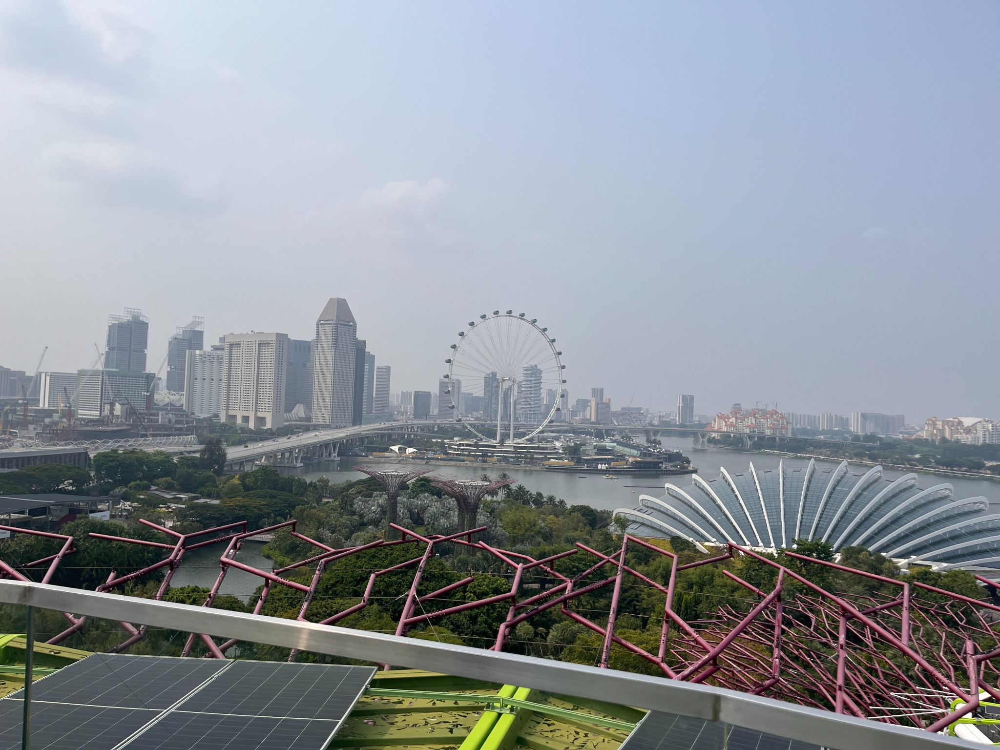

PERSONAL PHOTOGRAPHY JOURNAL
Small moments.
Lasting frames.
A collection of places, light, colour, and little details worth remembering.
A few frames from my point of view

01 / FEATURED FRAMEInto the Blue01 / 06
Travel · Nature · Everyday details
SCROLL TO EXPLORE ↓THE PHOTO JOURNAL
Frames & fragments.
A little gallery of places I’ve been
and moments I wanted to keep.
TAKE A FRAME WITH YOU
Your next
favourite wallpaper.
Find a photograph you love, choose a format, and save it for your phone or desktop. This prototype downloads the selected photograph; device-specific crops can be added next.
Choose a photograph ↗

PHONE · DESKTOP · ORIGINAL
a.
BEHIND THE LENS
Looking a little
closer at the world.
Anir.Clicks is my personal space for photographs collected on travels and everyday walks. Nothing too formal — just scenes, colours, and small details that caught my eye.
More moments on Instagram ↗